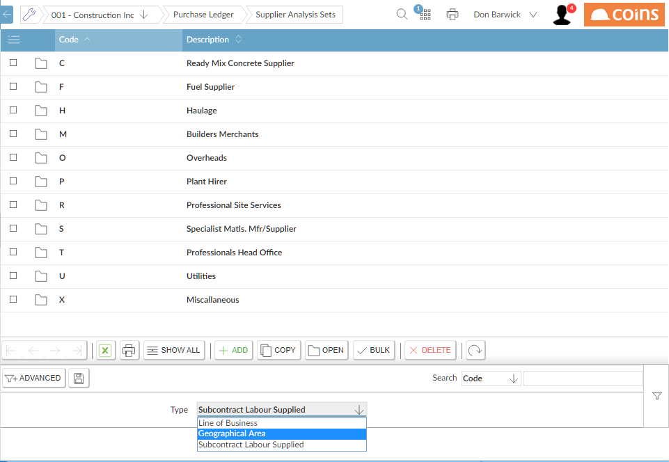

You need to set up valid codes for each of the analysis sets you are using. These codes represent the different values for each analysis set.
To set up codes for analysis sets
- Go to the Analysis Set Maintenance procedure for the module.
- Use the Type selector to choose an analysis set to maintain.
- Use the standard line-based maintenance operations to add, change or delete analysis set codes.

- If you want the analysis set to be a logical choice (for example, whether or not a is a of subcontract ), enter two codes, such as Y and N.
Now, when you maintain a record that the analysis sets apply to, you can select the analysis values (usually on an analysis set tab within the maintenance function). See the relevant documentation for each module for further information.